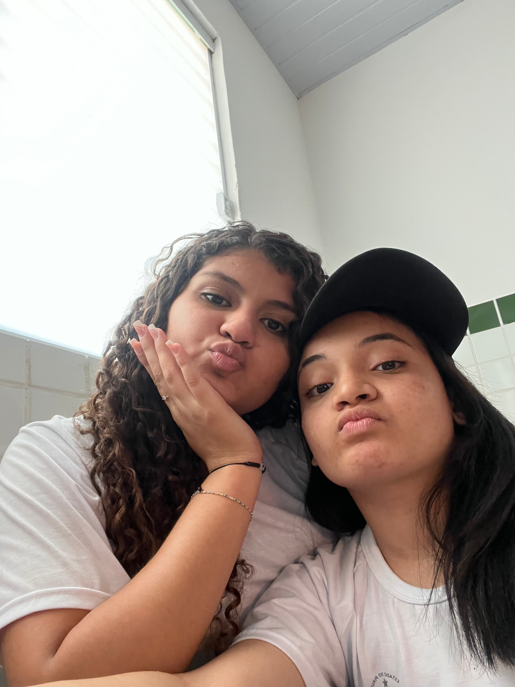

para Mavi, com carinho
Algumas histórias
ficam na gente.
Não fiz isso para mudar o que você sente. Fiz porque o que vivemos foi importante para mim, e eu queria guardar nossa história com cuidado.
Ver nossas lembranças
um pedacinho da nossa históriao que foi nosso
Nossas lembranças
Alguns instantes que eu queria rever mais uma vez.
 01 / 17
01 / 17A música começa quando você tocar no botão.
uma carta que eu precisava deixar
Para você, Mavi.
Eu não sei muito bem como começar essa carta, porque, sinceramente, eu queria que a gente não tivesse chegado a esse momento.
Quando você me disse que já não sente as coisas como antes, que não é mais a mesma coisa e que está bem ficando longe de mim, doeu. Doeu porque eu ainda sinto. Ainda te amo, ainda sinto sua falta e ainda existem tantas coisas pequenas no meu dia que me lembram você.
Talvez você pense que eu não te amo tanto assim, ou que o que sinto já passou. Mas não passou. Eu queria que você ficasse. Queria que a nossa história continuasse. Não vou fingir que não tenho essa vontade, porque seria mentira.
Ao mesmo tempo, se estar longe de mim está te fazendo bem, eu fico feliz por você. Mesmo que essa felicidade venha misturada com saudade e com um aperto enorme aqui dentro. Eu não quero que você fique por pena, por culpa ou porque leu uma carta triste. Quero que você esteja onde seu coração consiga ficar em paz.
Obrigada pelos momentos, pelos abraços, pelas brincadeiras, pelas fotos e por tudo que foi só nosso. Não vou tratar nossa história como se não tivesse significado. Ela significou muito para mim. Você significou muito para mim.
Eu ainda te amo. E, se um dia você sentir vontade de conversar, pode me procurar. Não estou colocando uma obrigação nas suas mãos nem pedindo uma promessa. Só quero que saiba que meu carinho é verdadeiro e que vou guardar você com muito amor, respeitando o caminho que escolher.
Cuida de você, Mavi. De verdade. Eu queria que você ficasse, mas, acima de tudo, queria que você ficasse bem.
Karine
com carinho, sempre
Eu te vivo, otara.
Obrigada por ter feito parte da minha história.